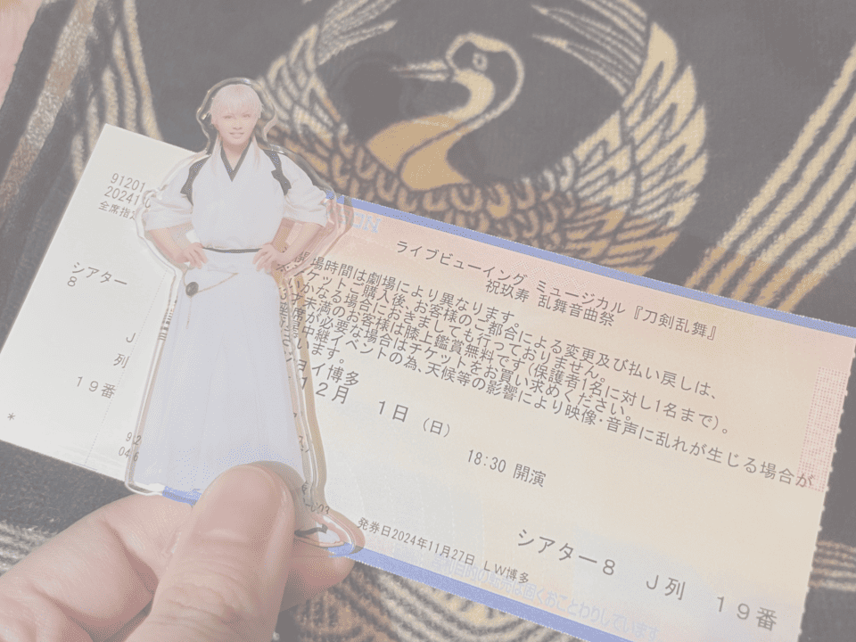

24.12.01  ミュージカル『刀剣乱舞』祝玖寿 乱舞音曲祭 大千秋楽公演北園涼, 大平峻也 ほか ライブビューイングでの鑑賞(T・ジョイ博多) 友達と鑑賞。終始叫んでた記憶しかない。今回の音曲祭は配信を沢山見たけど、やっぱり何回見てもいいなあって思った。1部のライブパートはめちゃくちゃ楽しくて、2部のミュージカルパートは過去の公演を思い出して見返したいなって思った。会場替わりの演出沢山あって本当にありがとうのきもち。 来年の東京ドーム公演、見に行きたすぎる。今から徳積まないとな…… ↑TOP